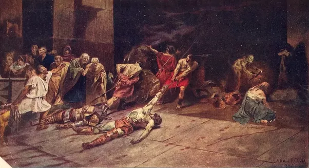
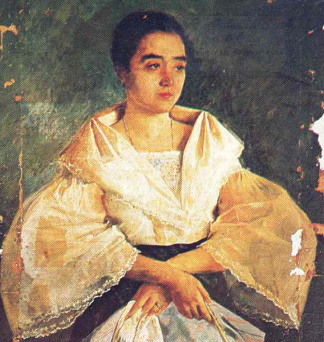
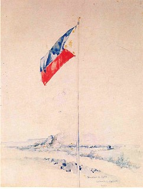

Juan Luna's Masterpieces
Juan Luna is without doubt the most famous and celebrated Filipino artist in the history of Philippines. With iconic and remarkable masterpieces such as ‘Spolarium’, ‘Blood Compact’ and ‘The Death of Cleopatra’, Luna is known for his dynamic and unique style, along with his dramatic and captivating canvases. His work is remembered as one of the principal examples of Romanticism and Realism schools of art. Juan was not just an artist, he was a revolutionary and influential political activist who was an active participant in the Philippine Revolution that took place in the late 19th century.
Learn More About This
Spoliarium
Spoliarium depicts bloody carcasses of slave gladiators being dragged away from the arena where they had entertained their Roman masters, with their lives. The painting was submitted by Luna to the Exposición Nacional de Bellas Artes in 1884 in Madrid, where it garnered the first gold medal. In 1886, it was sold to the Diputación Provincial de Barcelona for 20,000 pesetas. It currently hangs in the main gallery at the ground floor of the National Museum of the Philippines, and is the first work of art that greets visitors upon entry into the museum.
Learn More About This
The Parisian Life
The Parisian Life, also known as Interior d'un Cafe, literally meaning "Inside a Café", is a 1892 oil on canvas painting. It portrayed a scene inside a café in Paris with a woman identified as a courtesan or a prostitute representing "fallen womanhood", who was about to rise from a sofa overshadowing three men placed at the far left corner of the painting. Apart from the prominent figure of the female wearing a pale lavender frock and a hat embellished with flowers, fronted by two glasses of beers and an empty beer mug belying a "company of men", The Parisian Life portrayed a glimpse of Luna's own life in the capital of France while accompanied by two close friends.
Learn More About This
The Blood Compact
The Blood Compact portrays the blood compact ritual between Rajah Sikatuna and Miguel Lopez de Legazpi who is accompanied by other conquistadors.
Learn More About This
La Bulaquena
Literally "the woman from Bulacan". The woman in the portrait could be one of the women courted by Luna when he lost his wife. Luna killed his wife of jealousy.
Learn More About This
Souvenir de 1899
Souvenir de 1899, was completed by Luna on May 21, 1899, in Leitmeritz, Bohemia, after his meeting with Rizal’s bosom friend, Dr. Ferdinand Blumentritt.
Learn More About ThisList of Juan Luna's Painting's
Welcome to the table area this is all of the painting Juna Luna did some of these may or may not have that much of a deeper meaning as such one as the Spoliarium which talks about the opression the Filipino's face under the regime of the Spanish COlonizers but all of this paintings are surely beautfiul in it's own way to learn more about the different paintings that Juan Luna made in his lifetime click the button below.
Learn More About This